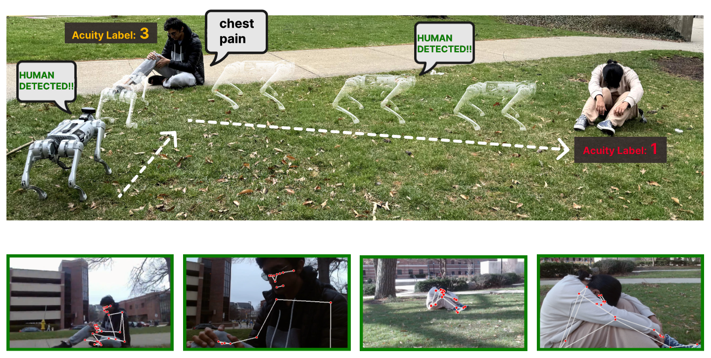
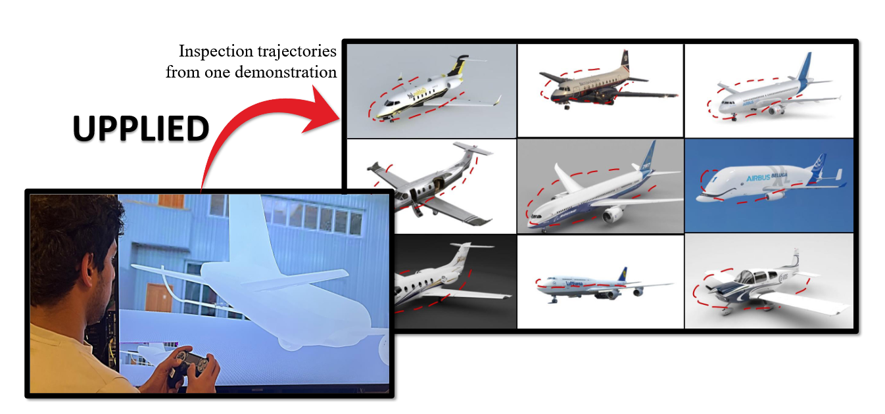
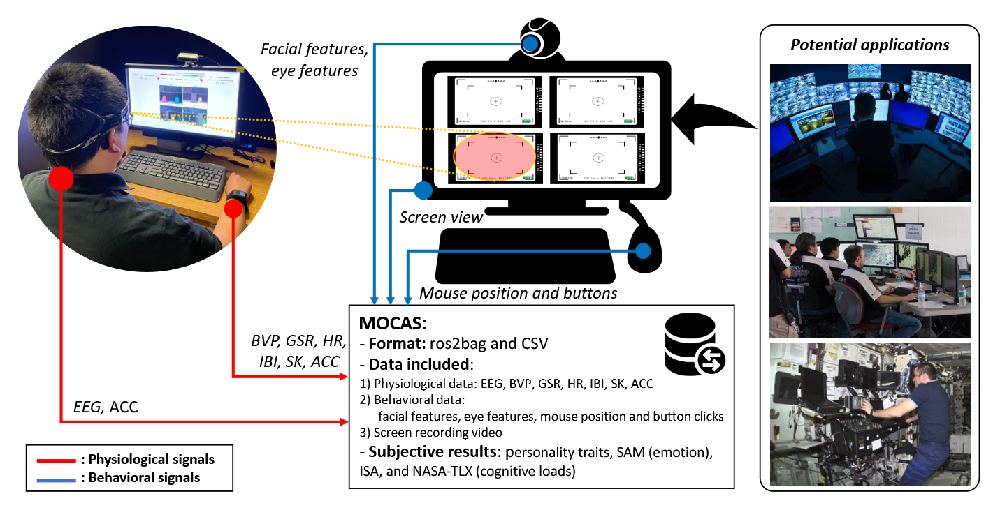
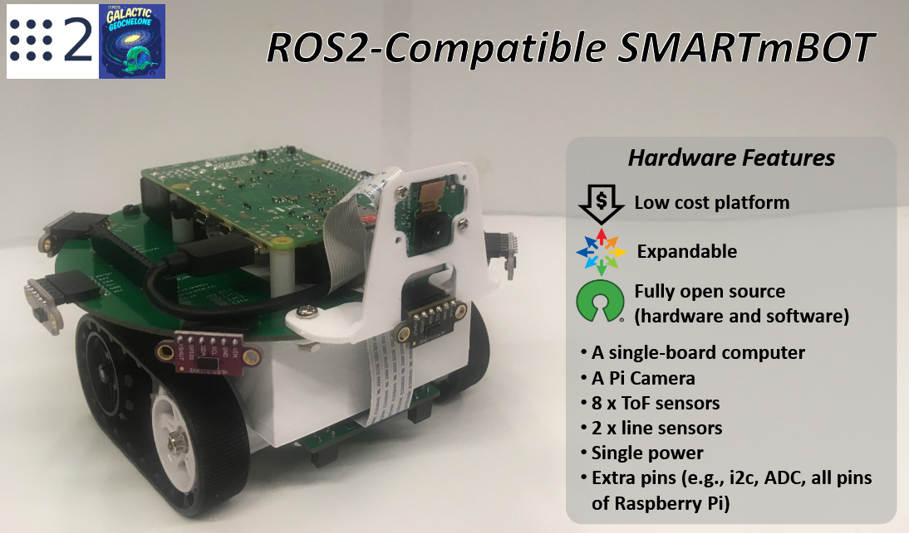
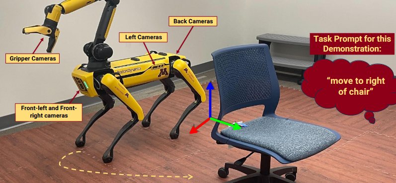
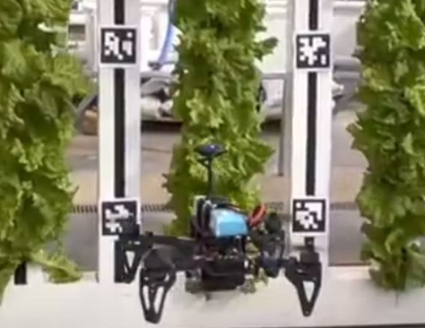
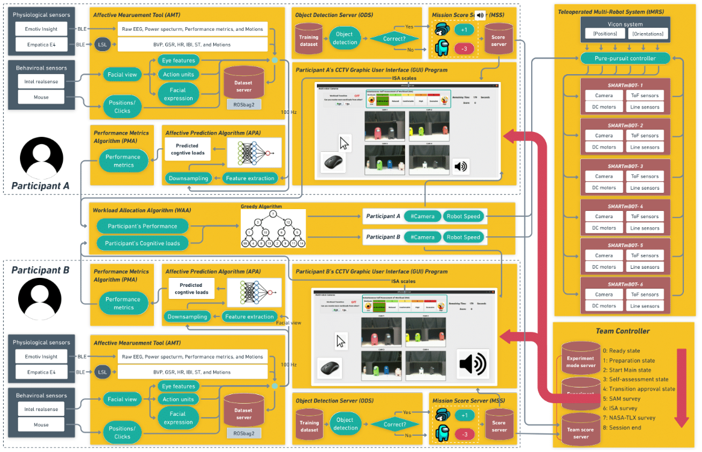
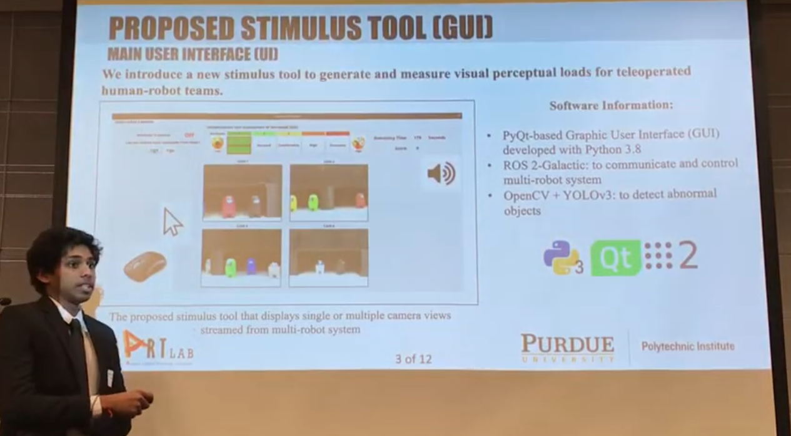

ARTEMIS: AI-Driven Robotic Triage Labeling and Emergency Information System
Authors: Revanth K. Senthilkumaran, Mridu Prashanth, Hrishikesh Viswanath, Sathvika Kotha, Kshitij Tiwari, Aniket Bera
Status: Preprint 2024
M.S. Robotics @ Carnegie Mellon University
Cross-embodiment learning • Manipulation & perception • Interactive reasoning
I'm a robotics researcher at Carnegie Mellon University pursuing my M.S. in Robotics, working with Prof. Ding Zhao in the SAFE-AI Lab. My research focuses on enabling robots to better perceive, reason about, and manipulate their environments through learning-based approaches.
Background: B.S. in Computer Engineering from Purdue University. Previously worked at AeroVironment Inc. as a Robotics Software Engineer and conducted research at Purdue's IDEAS Lab, SMART Lab, and the Air Force Research Laboratory.
Beyond Research: I play basketball, follow sports (college football/basketball, NBA, NFL, F1), play piano, and enjoy exploring new food spots.
[DEC 2025] Started M.S. in Robotics at Carnegie Mellon University
[JUN 2024] MOCAS dataset paper accepted to IEEE-TAFFC 2024
[APR 2024] Presented ARTEMIS at Purdue Spring Undergraduate Research Expo and won 2nd place in College of Science Category
[JUN 2023] UPPLIED paper published in IEEE-IROS 2023






Venue: Purdue Spring URC 2023

